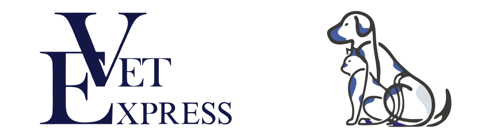

Կենդանիների արյան անալիզը մեր սեփական լաբորատորիայում պատրաստ է րոպեների ընթացքում, այնպես որ բժիշկը բուժման տարբերակն ընտրում է նույն այցի ժամանակ։
Կայքի տվյալներով՝ ճշգրիտ ախտորոշումը պատրաստ է 10 րոպեից պակասում։
Չորս պատճառ, որ կայքն ինքն է նշում։
Նշանակվում են միայն անհրաժեշտ թեստերը, ճշգրիտ տվյալները փրկում են ավելորդ ծախսից։
Ընդունում ենք բոլոր հիվանդներին՝ անկախ նրանից, թե ով է բուժող բժիշկը։
Սարքավորում, որն արագ բացահայտում է հիմնական խնդիրները, մինչև ուշ չէ։
Խնամք, խանութ և դեղատուն կլինիկայի տարածքում, առանց երկար ճանապարհի Երևանով։
Կանխարգելումը միշտ հաղթում է բուժմանը։
Վետ Էքսպրեսը գործընկերային ծրագիր ունի Երևանի և շրջակայքի կլինիկաների համար. ախտորոշման արդյունքներ՝ րոպեների ընթացքում, առանց սեփական սարքավորման։
Ծրագրի մասին կայքում| Երկուշաբթի – Շաբաթ | 10:00 – 20:00 |
| Կիրակի | 9:00 – 00:00 |
Երկուշաբթիից շաբաթ՝ 10:00–20:00, կիրակի՝ 9:00–00:00։
Սեղմեք «Գրանցվել» և պատասխանեք մի քանի հարցի, կամ զանգահարեք։ Թիմը կհաստատի ժամը։
Այո. կայքի համաձայն՝ ընդունում են բոլոր հիվանդներին՝ անկախ բուժող բժշկից։
Գնացուցակը կա կայքում, բայց գները կախված են կենդանու քաշից և դեպքից, ուստի ճշգրիտ թիվը կհաստատի թիմը։